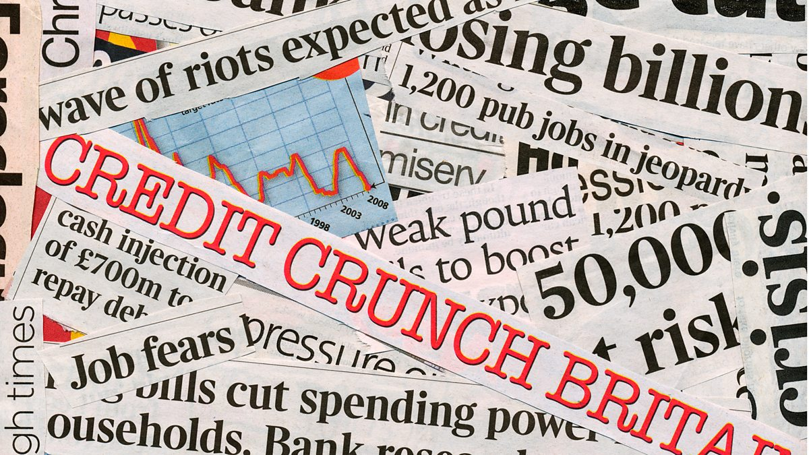
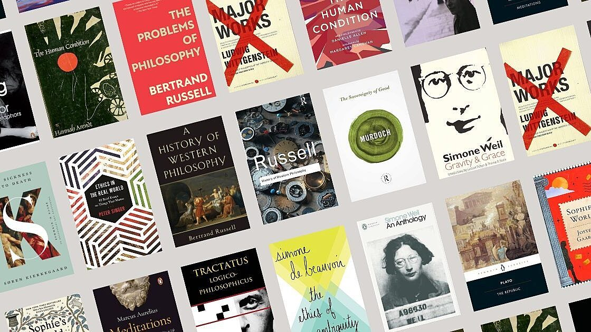

Ignorance Was Bliss, Literally
May 30, 2026
I stopped reading the news. Not as a statement. Not as a detox challenge with a planned end date. I just quietly stopped, and then noticed I felt better, and then kept not doing it. The world continued. I was fine.

What the news actually is
The news is not a neutral feed of important events. It is a product, and like most products it is optimised to keep you consuming it. The selection of what counts as news — what gets covered, how often, with what tone — is shaped entirely by what keeps people reading. And what keeps people reading is, almost always, fear and outrage.
This is not a conspiracy. It is just economics. Calm, measured updates about slow-moving problems do not get clicks. A crisis does. So every day becomes a crisis, even when it isn't, because that is the format that works.
The illusion of being informed
Reading the news every day feels responsible. Like you are a person who knows what is happening. But most of what the news delivers is not information you can act on. It is ambient dread. You absorb it, feel vaguely worse, and carry it around until tomorrow's ambient dread replaces it.

The things I actually needed to know — things that affected my life, my work, my city — I still found out about. Through conversations, through context, through the occasional headline I could not avoid. Being less plugged in did not make me uninformed. It made me more selective about what I gave my attention to.
The noise to signal problem
There is more news now than at any point in history. More sources, more platforms, more takes, more updates. And the quality of the average piece of information has not gone up with the quantity. If anything it has gone down, because the pressure to publish fast outpaces the time needed to be right.
Following the news closely means wading through an enormous amount of noise to find a small amount of signal. Most people do not do that filtering consciously. They just absorb everything and call it staying informed.
What replaced it
Nothing dramatic. I read more books. I had longer conversations. I noticed I had more opinions that were actually mine rather than reactions to whatever had been deemed important that morning. The mental space that the news had occupied turned out to be useful for other things.

When the news actually mattered
I want to be fair here. There are moments when the news is genuinely essential. COVID was one of them. In early 2020, knowing what was happening — which areas were affected, what symptoms to watch for, when lockdowns were starting — was not optional background noise. It was information that directly changed how people lived and whether they stayed safe.
In those moments, a functioning news cycle is a public good. It coordinates behaviour, communicates risk, and keeps people connected to something larger than their immediate surroundings. The problem is not that the news exists. It is that it runs at pandemic urgency all the time, even when nothing is a pandemic.
The fake news problem
COVID also showed the other side of it. Alongside the genuine reporting came an avalanche of misinformation — cures that did not work, statistics that were made up, conspiracy theories that spread faster than the virus itself. People forwarding things without reading them. Screenshots replacing sources. Confidence inversely proportional to accuracy.
The infrastructure that was supposed to keep people informed became, simultaneously, the infrastructure for keeping people misinformed. And the two streams looked nearly identical on a phone screen. Same format. Same urgency. No easy way to tell them apart.
This is the real issue with constant news consumption. It is not just that most of it is low value — it is that a meaningful portion of it is actively wrong, and the volume makes it nearly impossible to filter carefully. The more you consume, the more you absorb without checking. And the platforms have no incentive to slow that down.
Selective, not absent
What I actually want is not zero news. It is better news. Slower, more considered, less driven by what performs well in the first hour. The kind of reporting that takes time to be right rather than racing to be first. That exists, but you have to go looking for it — it does not come to you in a feed optimised for engagement.
The move is not to go fully dark. It is to be deliberate. To follow a small number of sources you actually trust, check them occasionally rather than constantly, and treat everything else with the scepticism it has earned.
Ignorance was bliss, Literally.
Or at least: knowing less was costing me less.